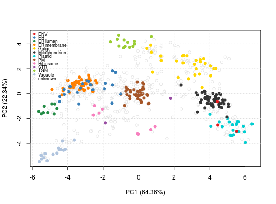

The function adds a 'markers' feature variable. These markers are
read from a comma separated values (csv) spreadsheet file. This
markers file is expected to have 2 columns (others are ignored)
where the first is the name of the marker features and the second
the group label. Alternatively, a markers named vector as provided
by the pRolocmarkers function can also be used.
addMarkers(object, markers, mcol = "markers", fcol, verbose = TRUE)
MSnSet.character with the name the markers' csv
file or a named character of markers as provided by
pRolocmarkers.character of length 1 defining the feature
variable label for the newly added markers. Default is
"markers".logical indicating if number of markers
and marker table should be printed to the console.A new instance of class MSnSet with an additional
markers feature variable.
It is essential to assure that featureNames(object) (or
fcol, see below) and marker names (first column) match,
i.e. the same feature identifiers and case fold are used.
See pRolocmarkers for a list of spatial
markers and markers for details about markers
encoding.
library("pRolocdata") data(dunkley2006) atha <- pRolocmarkers("atha") try(addMarkers(dunkley2006, atha)) ## markers already exists fData(dunkley2006)$markers.org <- fData(dunkley2006)$markers fData(dunkley2006)$markers <- NULL marked <- addMarkers(dunkley2006, atha)#>#> organelleMarkers #> ENV ER ER lumen ER membrane Golgi #> 3 21 9 42 27 #> Mitochondrion Plastid PM Ribosome STR #> 50 22 42 8 2 #> TGN unknown Vacuole #> 13 434 16fvarLabels(marked)#> [1] "assigned" "evidence" "method" "new" "pd.2013" #> [6] "pd.markers" "markers.orig" "markers.org" "markers"## if 'makers' already exists marked <- addMarkers(marked, atha, mcol = "markers2")#>#> organelleMarkers #> ENV ER ER lumen ER membrane Golgi #> 3 21 9 42 27 #> Mitochondrion Plastid PM Ribosome STR #> 50 22 42 8 2 #> TGN unknown Vacuole #> 13 434 16fvarLabels(marked)#> [1] "assigned" "evidence" "method" "new" "pd.2013" #> [6] "pd.markers" "markers.orig" "markers.org" "markers" "markers2"